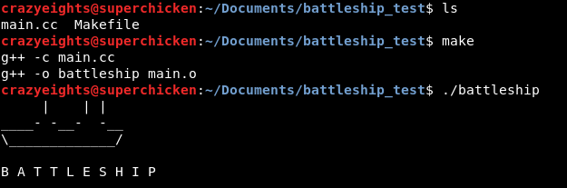
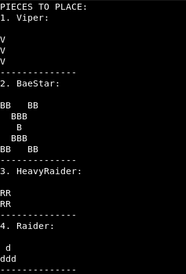
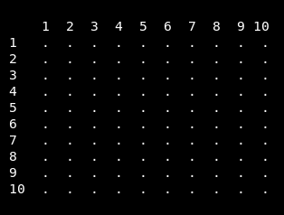
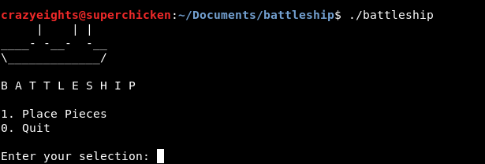
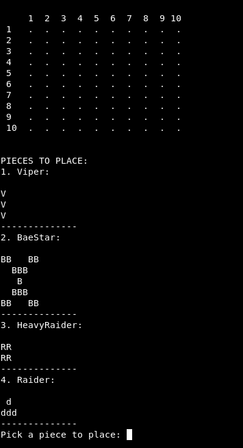
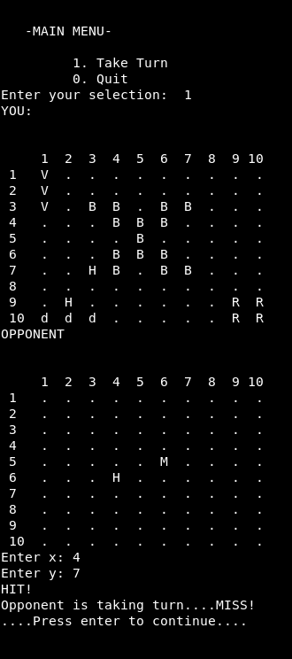

C++ Notes.
Creating a Simple Battleship Game
Use the Model View Controller Design Pattern
Model
Directly manages data, logic and rules of the application.
In this instance the board, player and opponent classes are the model
View
Displays necessary information from the model in a form suitable for interaction
Controller
Accepts user input, and modifies the model accordingly.
Typically the controller class is called from the main class.
Create the main class:
main.cc
#include <iostream> using namespace std; int main(){ cout<<" | | | "<<endl; cout<<"____- -__- -__"<<endl; cout<<"\\_____________/"<<endl; cout<<"\nB A T T L E S H I P\n\n"; return 0; }
To be able to compile the project more easily, create a makefile:
Makefile
#variable obj - all the objects needed to run the application OBJ = main.o #executable application battleship: $(OBJ) g++ -o battleship $(OBJ) #create object file for main class main.o: main.cc g++ -c main.cc #remove all .o files that are part of OBJ and battleship clean: rm -f $(OBJ) battleship
To compile: make
To run: ./battleship
C++ Notes.
Creating a Simple Battleship Game
We want our board to store ship positions, hits, and misses.
Here are some ships, we want the board to hold:

A 10 by 10 board fits all the pieces, and is not too large.
Here is the board:
Create the header file for the board class:
Header files contain the class definition, and contain all function declarations for that class. They can be included from other files
Board.h
//ensures class is uniquely defined //and prevents double declarations #ifndef BOARD_H #define BOARD_H #include <iostream> using namespace std; //Board class definition class Board{ //public functions can be called from other files //which have board class included public: //The Board Constructor - a member of a class the initializes objects of a class Board(); void drawBoard(); int placePiece(int, int, int); int markBoard(int, int); void drawHiddenBoard(); //private functions can be only accessed in the class they //are defined or initialized private: int width; int height; char slots[10][10]; int addViper(int, int); int addBaeStar(int, int); int addHeavyRaider(int, int); int addRaider(int, int); }; #endif
Create the source file for the board class:
A source file includes the defintions of the functions declared in the header file. It must include its own header file.
Board.cpp
//Include definiton of class Board #include "Board.h" Board::Board(){ width=10; height=10; for(int x=0; x=0&&y-1>=0&&y+1<10){ if(slots[y-1][x-1]=='.'&&slots[y][x-1]=='.'&&slots[y+1][x-1]=='.'){ slots[(y-1)][(x-1)]='V'; slots[y][(x-1)]='V'; slots[(y+1)][(x-1)]='V'; return 0; } } return 1; } int Board::addBaeStar(int x, int y){ if(x-1>=0&&y-1>=0&&y+3<10&&x+3<10){ if(slots[y-1][x-1]=='.'&&slots[y-1][x]=='.'&&slots[y-1][x+2]&&slots[y-1][x+3]=='.' &&slots[y][x]=='.'&&slots[y][x+1]=='.'&&slots[y][x+1]=='.'&&slots[y+1][x+1]=='.'&&slots[y+2][x] &&slots[y+2][x+1]=='.'&&slots[y+2][x+2]=='.'&&slots[y+3][x-1]=='.'&&slots[y+3][x]=='.' &&slots[y+3][x+2]=='.'&&slots[x+3][x+3]=='.'){ slots[(y-1)][(x-1)]='B'; slots[(y-1)][x]='B'; slots[(y-1)][(x+2)]='B'; slots[(y-1)][(x+3)]='B'; slots[y][x]='B'; slots[y][(x+1)]='B'; slots[y][(x+2)]='B'; slots[(y+1)][(x+1)]='B'; slots[(y+2)][x]='B'; slots[(y+2)][(x+1)]='B'; slots[(y+2)][(x+2)]='B'; slots[(y+3)][(x-1)]='B'; slots[(y+3)][x]='B'; slots[(y+3)][(x+2)]='B'; slots[(y+3)][(x+3)]='B'; return 0; } } return 1; } int Board::addHeavyRaider(int x, int y){ if(y-1>=0&&x-1>=0&&x<10&&y<10){ if(slots[y-1][x-1]=='.'&&slots[y-1][x]=='.'&&slots[y][x-1]=='.'&&slots[y][x]=='.'){ slots[y-1][x-1]='R'; slots[y-1][x]='R'; slots[y][x-1]='R'; slots[y][x]='R'; return 0; } } return 1; } int Board::addRaider(int x, int y){ if(x-1>=0&&y-1>=0&&x+1<10&&y<10){ if(slots[y-1][x]=='.'&&slots[y][x-1]=='.'&&slots[y][x]=='.'&&slots[y][x+1]=='.'){ slots[y-1][x]='d'; slots[y][x-1]='d'; slots[y][x]='d'; slots[y][x+1]='d'; return 0; } } return 1; } void Board::drawBoard(){ cout<<"\n\n "; for(int i=1; i<(width+1); i++){ if(i>=10){ cout<< i << " "; }else{ cout << " " << i << " "; } } cout << endl; for(int x=0; x=10){ cout << " " << (x+1) << " "; }else{ cout << " " << (x+1) << " "; } } cout << " " << slots[x][y] << " "; if(y==(height-1)){ cout << endl; } } } } void Board::drawHiddenBoard(){ cout<<"\n\n "; for(int i=1; i<(width+1); i++){ if(i>=10){ cout<< i << " "; }else{ cout << " " << i << " "; } } cout << endl; for(int x=0; x=10){ cout << " " << (x+1) << " "; }else{ cout << " " << (x+1) << " "; } } if(slots[x][y]=='.'||slots[x][y]=='H'||slots[x][y]=='M'){ cout << " " << slots[x][y] << " "; } else{ cout << " . "; } if(y==(height-1)){ cout << endl; } } } } int Board::markBoard(int x, int y){ if(slots[y-1][x-1]=='.'){ slots[y-1][x-1]='M'; return -1; } else if(slots[y-1][x-1]=='V'){ slots[y-1][x-1]='H'; return 1; } else if(slots[y-1][x-1]=='B'){ slots[y-1][x-1]='H'; return 2; } else if(slots[y-1][x-1]=='R'){ slots[y-1][x-1]='H'; return 3; } else if(slots[y-1][x-1]=='d'){ slots[y-1][x-1]='H'; return 4; } else{ return 0; } }
Next create the player to use the board
C++ Notes.
Creating a Simple Battleship Game
Player.h
#ifndef PLAYER_H #define PLAYER_H #include "Board.h" class Player{ public: Player(); int placeShip(int, int, int); int takeHit(int, int); void getDrawBoard(); int getPlayerHealth(); private: Board board; int numShips; int viper; int baestar; int heavy_raider; int raider; int shipHealth[4] = {3, 15, 4, 4}; }; #endif
Player.cc
#include "Player.h" Player::Player(){ numShips=0; viper=1; baestar=1; heavy_raider=1; raider=1; } int Player::placeShip(int t, int x, int y){ int r=-1; if(t==1&&viper!=0){ viper--; r= board.placePiece(t, x, y); } else if(t==2&&baestar!=0){ baestar--; r=board.placePiece(t, x, y); } else if(t==3&&heavy_raider!=0){ heavy_raider--; r=board.placePiece(t, x, y); } else if(t==4&&raider!=0){ raider--; r=board.placePiece(t, x, y); } if(r==0){numShips++;} return r; } int Player::takeHit(int x, int y){ int r=board.markBoard(x, y); if(r==-1||r==0){ return -1; } else if(r==1){ shipHealth[0]--; if(shipHealth[0]==0){ numShips--; return 1; } } else if(r==2){ shipHealth[1]--; if(shipHealth[1]==0){ numShips--; return 2; } }else if(r==3){ shipHealth[2]--; if(shipHealth[2]==0){ numShips--; return 3; } }else if(r==4){ shipHealth[3]--; if(shipHealth[3]==0){ numShips--; return 4; } } return 0; } void Player::getDrawBoard(){ board.drawBoard(); } int Player::getPlayerHealth(){ return numShips; }
C++ Notes.
Creating a Simple Battleship Game
Create an Opponent for the Player to play with that randomly selects positions
Opponent.h
#ifndef OPPONENT_H #define OPPONENT_H #include "Board.h" #include <iostream> #include <stdlib.h> using namespace std; class Opponent{ public: Opponent(); void placeShips(); void placeShip(int); int takeHit(int, int); void makeMove(int&, int&); void drawHiddenBoard(); int getOpponentHealth(); private: Board board; int numShips; int shipHealth[4] = {3, 15, 4, 4}; }; #endif
Opponent.cc
#include "Opponent.h" Opponent::Opponent(){ numShips=6; //Viper: 1 //Baestar: 2 //HeavyRaider: 3 //Raider 4 placeShips(); } void Opponent::placeShips(){ placeShip(1); placeShip(2); placeShip(3); placeShip(4); } void Opponent::placeShip(int t){ int randx=-1; while(randx<0 || randx > 10){ randx = rand() % 10 + 1; } int randy=-1; while(randy<0 || randy>10){ randy = rand() % 10 + 1; } int r = board.placePiece(t, randx, randy); if(r){ placeShip(t); } } int Opponent::takeHit(int x, int y){ int r=board.markBoard(x, y); if(r==-1||r==0){ return -1; } else if(r==1){ shipHealth[0]--; if(shipHealth[0]==0){ numShips--; return 1; } } else if(r==2){ shipHealth[1]--; if(shipHealth[1]==0){ numShips--; return 2; } }else if(r==3){ shipHealth[2]--; if(shipHealth[2]==0){ numShips--; return 3; } }else if(r==4){ shipHealth[3]--; if(shipHealth[3]==0){ numShips--; return 4; } } return 0; } void Opponent::makeMove(int& randx, int& randy){ randx=-1; while(randx<1 || randx > 10){ randx = rand() % 10 + 1; } randy=-1; while(randy<1 || randy>10){ randy = rand() % 10 + 1; } } void Opponent::drawHiddenBoard(){board.drawHiddenBoard();} int Opponent::getOpponentHealth(){ return numShips; }
C++ Notes.
Creating a Simple Battleship Game
Print the game play to the console using the view.
View.h
#ifndef VIEW_H #define VIEW_H #include <iostream> using namespace std; class View{ public: void startMenu(int&); void mainMenu(int&); void waitForNext(); void pieceMenu(int&); void coordinatesMenu(int&, int&); private: int readInt(); }; #endif
View.cc
#include <sstream> #include <string> #include "View.h" void View::startMenu(int& choice){ string str; choice = -1; cout<<"1. Place Pieces\n"; cout<<"0. Quit\n\n"; while(choice < 0 || choice > 1){ cout<<"Enter your selection: "; choice= readInt(); } if(choice==0){cout << endl;} } void View::mainMenu(int& choice) { string str; choice=-1; cout<<"\n\n\n -MAIN MENU-\n\n"; cout<<" 1. Take Turn \n"; cout<<" 0. Quit\n"; while (choice < 0 || choice > 1) { cout<<"Enter your selection: "; choice = readInt(); } if (choice == 0){ cout << endl; } } void View::pieceMenu(int& choice){ choice = -1; cout << "\n\nPIECES TO PLACE: \n"; cout << "1. Viper: \n\n"; cout << "V\nV\nV\n"; cout << "--------------\n"; cout << "2. BaeStar: \n\n"; cout << "BB BB \n"; cout << " BBB \n"; cout << " B \n"; cout << " BBB \n"; cout << "BB BB \n"; cout << "--------------\n"; cout << "3. HeavyRaider: \n\n"; cout << "RR\nRR\n"; cout << "--------------\n"; cout << "4. Raider: \n\n"; cout << " d \nddd\n"; cout << "--------------\n"; while(choice < 0 || choice > 4){ cout<<"Pick a piece to place: "; choice=readInt(); } } void View::coordinatesMenu(int& x, int& y){ x=-1; y=-1; while(x < 1 || x > 10){ cout <<"Enter x: "; x = readInt(); } while(y < 1 || y > 10){ cout <<"Enter y: "; y = readInt(); } } void View::waitForNext(){ string str; cout << "...."; cout << "Press enter to continue...."; getline(cin, str); } int View::readInt(){ string str; int num; getline(cin, str); stringstream ss(str); ss >> num; return num; }
C++ Notes.
Creating a Simple Battleship Game
Control the interactions between the player and the opponent and the game
Controller.h
#ifndef CONTROLLER_H #define CONTROLLER_H #include "Player.h" #include "View.h" #include "Opponent.h" #include <iostream> class Controller { public: void launch(); private: View view; Player player; Opponent opponent; void play(); }; #endif
Controller.cc
#include "Controller.h" void Controller::launch(){ int choice; while(1&&player.getPlayerHealth()<4){ choice=-1; view.startMenu(choice); if(choice==1){ player.getDrawBoard(); int piece=-1; view.pieceMenu(piece); int x=-1; int y=-1; view.coordinatesMenu(x, y); int r=player.placeShip(piece, x, y); if(r==1){ cout<<"Invalid Position\n"; } else if(r!=0){ cout << "Ship Placed Already!\n"; } view.waitForNext(); } else{ break; } } if(player.getPlayerHealth()==4){ play(); } } void Controller::play(){ int choice; while(1){ choice=-1; view.mainMenu(choice); if(choice==1){ cout<<"YOU: \n"; player.getDrawBoard(); cout<<"OPPONENT \n"; opponent.drawHiddenBoard(); int x=-1; int y=-1; view.coordinatesMenu(x, y); int r=opponent.takeHit(x, y); if(r==-1){cout<<"MISS!";} else if(r==0){cout<<"HIT!";} else if(r==1){cout<<"You sank the Viper";} else if(r==2){cout<<"You sank the BaeStar";} else if(r==3){cout<<"You sank the HeavyRaider";} else if(r==4){cout<<"You sank the Raider";} cout<<"\nOpponent is taking turn...."; int ox=-1; int oy=-1; opponent.makeMove(ox, oy); int rp=player.takeHit(ox, oy); if(rp==-1){cout<<"MISS!";} else if(rp==0){cout<<"HIT!";} else if(rp==1){cout<<"You sank the Viper";} else if(rp==2){cout<<"You sank the BaeStar";} else if(rp==3){cout<<"You sank the HeavyRaider";} else if(rp==4){cout<<"You sank the Raider";} cout << endl; view.waitForNext(); if(player.getPlayerHealth()==0){ cout<<"Game Over... You Lose!"; cout << endl; break; } if(opponent.getOpponentHealth()==0){ cout<<"Game Over... You Win!"; cout << endl; break; } }else{ break; } } }
C++ Notes.
Creating a Simple Battleship Game
Update the Main Class
Now that the controller class has been written, update the main class to call the function launch and start the game
main.cc
#include <iostream> #include "Controller.h" using namespace std; int main(){ Controller control; cout << " | | | " << endl; cout << "____- -__- -__" << endl; cout << "\\_____________/" << endl; cout << "\nB A T T L E S H I P\n\n"; control.launch(); return 0; }
Update the Makefile
Makefile
OBJ = main.o Controller.o View.o Player.o Opponent.o Board.o battleship: $(OBJ) g++ -o battleship $(OBJ) main.o: main.cc g++ -c main.cc Controller.o: Controller.cc Controller.h View.h Player.h g++ -c Controller.cc View.o: View.cc View.h g++ -c View.cc Player.o: Player.cc Player.h Board.h g++ -c Player.cc Opponent.o: Opponent.cc Opponent.h Board.h g++ -c Opponent.cc Board.o: Board.cc Board.h g++ -c Board.cc clean: rm -f $(OBJ) battleship
Run the project:
To compile: make
To run: ./battleship



C++ Notes.
Object Oriented Programming
Define: public
A member that can used by any class which includes its class.
Define: protected
A member that can be accessed by derived classes (inherited attributes from parent)
Define: private
A member that can only be accessed in the class they are defined or initialized.
Define: static
When we declare a member of a class as static it means no matter how many objects of class are there is only one copy of the static member
Using static
//Example: id, nextId - assign each Customer a unique id //In header:class Customer{ public: Customer(); private: static int nextId; int id; }//In source:int Customer::nextId=100; public Customer:: Customer(...): id(nextId++){ ... }
When to use const
- const - constant, unchanged
- enforces documentation
- When a variable is not to be changed ( if passed as parameter or declaration of variable)
const function:
- can always be called by non-consts objects of a class, const can only be called by non-const objects
- function will not make changes to the object
Define: class
- user defined data type
- holds its own data members and member functions
- can be used to create an instance of that class
Define: Pass By Reference
A copy of the address of the actual parameter is stored. Use pass by reference when you are changing the parameter passed in by the client program.
Define: Pass By Value
- pass by value means that you are making a copy in memory of the actual parameters value is passed in, a copy of the contents of the actual parameters
- any changes you make will not affect the original
- the copy is stored on the stack frame
Define: Constructor
A member of a class that initializes objects of a class.
Constructors (Default, Copy, Conversion)
// Member functions definitions including constructorLine::Line(int len) { cout << "Normal constructor allocating ptr" < <endl; // allocate memory for the pointer; ptr = new int; *ptr = len; }
Default Constructors
- a constructor, that has no parameters, (or default parameters)
- does not take any arguements
- the compiler will automatically provide default constructor implicitly
- the default value of variable is 0 in case of automatic initialization
Copy Constructors
A copy constructor is a member function which initializes an object using another object of the same class.
Generally has prototype classmame( const classname &old_obj);
Line::Line(const Line &obj) {
cout << "Copy constructor allocating ptr." < <endl;
ptr = new int;
*ptr = *obj.ptr; // copy the value
}
Define Conversion Constructor
- single parameter that is declared without the function specifier explicit
- The compiler uses conversion constructors to convert objects from one type of the first parameter to the type of the conversion constructors class
Define: Destructors
- called when the lifetime ends
- frees resources that the object may have aquired during its lifetime
Linked Lists
//In Header:class LinkedList{ class Node{ friend class LinkedList; Type * data; Node *next; } private: Node *head; }In Source:LinkedList::LinkedList(): head(0){}
Define: Encapsulation
- wrapping up data and information into a single unit (like a class or an object)
- Ex: Model, View, Controller Design Pattern
Principle of Least Privilige
Only give priviliges to things that need priviliges
Friendship
A class can access protected and private members of other class which is declared as friend
Define: Object Oriented Composition
The collection of attributes that make up an object
Ex. : A student is made up of:
- name
- student number
- gpa
Define Instructor:
Creating new classes from existing classes, they inherit functions and properties
How to use Inheritence
//In child://header: class aChild : public Parent { }//In source (constructor)aChild::aChild(): aParent(attribute ... ) {}
Polymorphism
Able to assign a different meaning or usage to something in different contexts or to allow a variable, function, operator, or object to have more than one forms
Abstract Classes
- normally a base class
- cannot be used to instantiate (instance) objects
- can be too general to be their own objects
- A class is made abstract by declaring one of more of its virtual functions to be pure virtual.
//Example: A pure virtual functionvirtual void draw() const=0;
Virtual and Pure Virtual Functions
- Pure virtual functions do not provide implementations.
- Derived classes must override all base-class pure virtual functions with concrete implementations of those functions. If not, the derived class will be abstract as well.
- Pure virtual functions are used when it does not make sense for the base class to have a function implementation.
- Attempting to instantiate an object of an abstract class, or a derived class without overriden pure virtual functions will result in compilation error.
- Can also have data members and concrete functions, which are subject to normal rules of inheritence.
- virtual functions have an implementation, pure virtual functions do not have an implementation.
- virtual - option of overriding base class function
- pure virtual - base class function must be overridden.
- virtual functions - functions that have a definition but can also be overriden by derived classes.
virtual function example:
//In base class: Animal.hvirtual void nameAnimal()=0;//In derived class: Cat.hvirtual inline void nameAnimal(){ cout<<"A CAT \n"; } inline void animalType(){ cout<<"base \n";}//In derived class: TabbyCat.hinline void nameAnimal(){ cout<<"A TABBY cat \n";} inline void animalType(){ cout<<"derived \n";}//In main class:Cat c; TabbyCat tc;//virtual function, binded at runtime // would print A CATc.nameAnimal();// would print A TABBY cattc.nameAnimal();//non virtual function, binded at compile time // would print basec.animalType();// would print basetc.animalType();
Virtual Destructors
- create a virtual destructor (a destructor with the keyword virtual) in the base class.
- this makes all derived class destructors virtual.
- when the destructor is called, the destructor for the derived class and the base class is called.
- the base class destructor automatically executes after the derived-class destructor
Define Overloading
To specify more than one definition of a function name or operator in the same scope
Function Overloading
Multiple definitions of the same function. Functions must differ in return type, or number of parameters
Example:
int Person::agreedTo(int a);//can be overloaded as:bool Person::agreedTo(int a);//But not:int Person::agreedTo(bool a);
Operator Overloading
- you can redefine or overload built in operators
- must have keyword operator in overloaded function
- :: , . , * , ?: can not be overloaded
Example:
void Person::operator+=(int b);
Cascading Function Calls using this
cascading member-function calls - invoking multiple functions in the same statement
Ex. Setting time:
//In main class: //Time object:Time t;//cascading function callst.setHour(12).setMinute(1).setSecond(45);//In Time.ccTime &Time::setHour(int h){hour = h; return *this;} Time &Time::setMinute(int m){minute=m; return *this;} Time &Time::setSecond(int s){second=s; return *this;}
This works because the dot operator associates left to right, so the program first evaluates setHour, and returns a reference to t as a value of the function call. So like it would evaluate like this:
t.setHour(12).setMinute(1).setSecond(45); &t.setMinute(1).setSecond(45); &t.setSecond(45); &t;
Cascading Stream Insertion Functions
Using muiltiple stream insertion operators
Example:
std::cout << "Sum is " << number1 + number2 << std::endl;
Define Stack
- Stack is used for memory allocation
- variables are stored in memory
- Allocation is dealt with when the program is compiled
Define Callstack
A stack data structure that stores information about active subroutines and at what point they finish, and returns control when they are finished
It is called at runtime, until the execution of the current statement.
Define Frame Stack
- The first function in the frame stack is main()
- Function parameters are stored in frame stack
- Includes the return address, arguement variables, local variables, saved copies modified by the subprogram to be restored
- Activation record, the collection of all data on the stack associated with one subprogram call
Define Heap
Heap is used for dynamic memory allocation, such as pointers
It is called at execution
C++ Templates
Why use a template?
It requires only one definition for multiple types, requires less code, and is more effecient
Class Templates
- must declare the class as a template class: template <class T>
- All objects using the class would be used as type T
Define STL
Standard Template Library, uses 4 components called algoritmns, containers, functions, and iterators
List of STL algoritmns
- Sorting
- Searching
- ...
List of STL containers
- Sequence Containers
- Vector
- List
- Deque
- Arrays
- forward_list
- Adapter Containers
- Queue
- priority_queue
- Stack
- Associative Containers
- Set
- multiset
- Map
- multimap
Sequence Container (Vector) Example:
#include <vector>//prototype for function template printVectortemplate <typename T> void printVector( const vector<T>& integers);//vector initializedvector <int> integers;//then you can use: // integers.size(); // integers.capacity(); // integers.push_back(...); //integers.add_to_back(...);
Vector Iterator: Print Vector
template <typename T> void printVector(const vector<T>& integers){
typename vector<T>::const_iterator constInterator;
//display vector elements using const_iterator
for(constIterator = integers.begin(); const!= integers.end; ++constIterator){
cout << constIterator << endl;
}
}
Vector Operations
//initvector <int> integers(array, arraysize);//front, begin integers.begin(); integers.front(); //back, end integers.back(); integers.end(); integers.copy(); integers.insert(position, value); //to remove erase, empty, clear
STL functions
- uses the function call operator
- Instances of such classes are called function objects or functors
List of STL methods
- sort
- push_front
- push_back
- insert
- splice
- sort
- merge
- pop_front
- pop_back
- swap
- assign
- merge
- remove
STL Iterators
working with a sequence of values
Exception Handling
try{//something
}catch(Exception e){//print error
}
STL Exception Handling
- out_of_range
- invalid_argument - invalid arguement passed to function
- length_error - attempt to locate to long (in a string, .... )
- bad_alloc - failed attempt to alloc with new allocator because not enough memory
Example: Out of Range Exception
try{
integers.at(100) = 77;
}catch(out_of_range &outOfRange){
cout << "Exception "<< outOfRange;
}